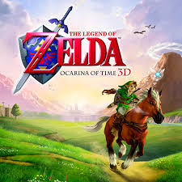

Zelda: Ocarina of Time
Zelda: Ocarina of Time é um jogo de ação e aventura desenvolvido pela Nintendo, lançado em 1998 para o Nintendo 64. O jogo segue Link, um jovem herói, enquanto ele embarca em uma jornada épica para salvar a princesa Zelda e derrotar o vilão Ganondorf. Com um mundo aberto, quebra-cabeças desafiadores e uma narrativa envolvente, Ocarina of Time é amplamente considerado um dos melhores jogos de todos os tempos.